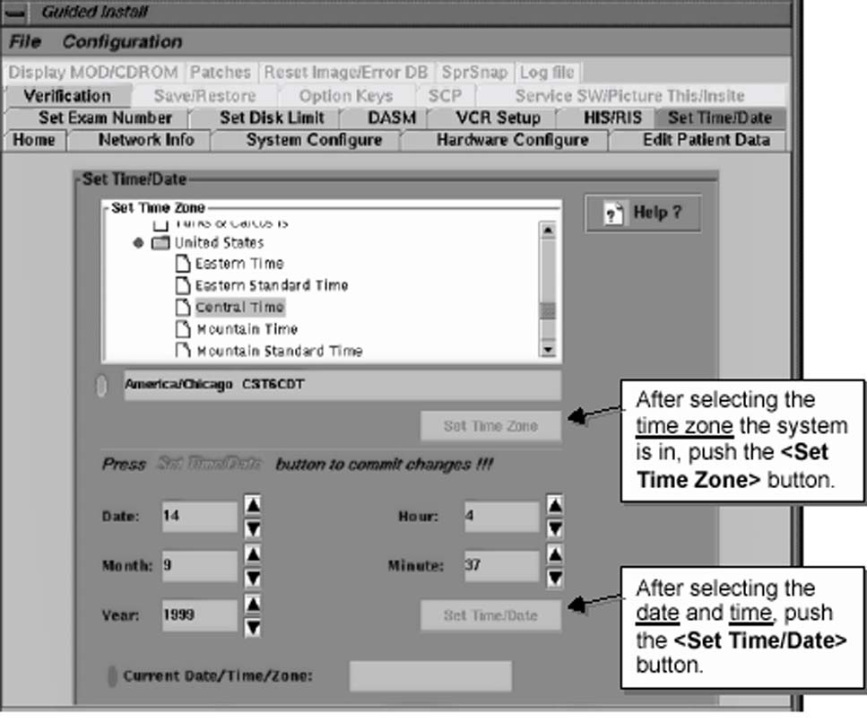

Operating Documentation
Direction 5133330-3, Rev# 14
Signa EXCITE HD 3.0T Service Methods
Module Version 1.0, Version Date 5/15/07
Operating Documentation |
| Required Persons | Preliminary Reqs | Procedure | Finalization |
|---|---|---|---|
| 1 | 2 mins |
This procedure explains the steps necessary to set the date and time of the system host.
Set the time and date.
The Time/Date tab is the only tab that the Configure button will never be highlighted to set options. There are separate buttons for configuring this tab (see Illustration 1). If you need to re-configure the Host time and/or date at any time, do the following:
Illustration 1: SET TIME/DATE MENU

Select the Time Zone your system is located in, then push the [Set Time Zone] button.
Select the date and local time, then push the [Set Time/Date] button.
Insure the Date and Time is correct for the system.